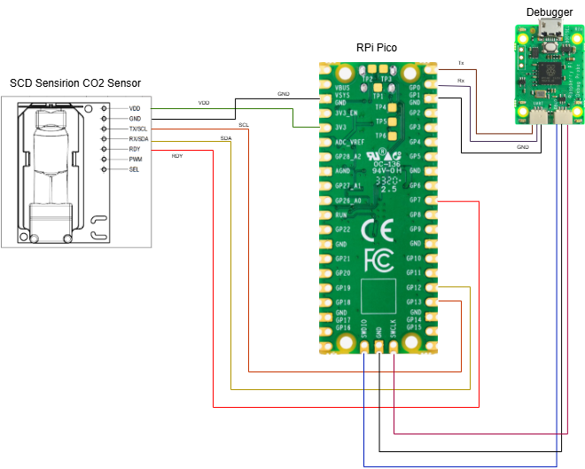
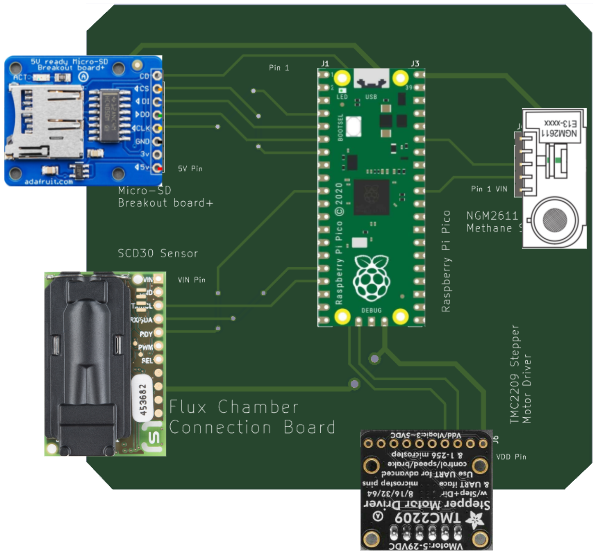

Written by Dikshanya Ramaswamy, Nicholas Ricci and Ao Ruan
This project focuses on the integration and testing of the Sensirion SCD30 sensor module for measuring carbon dioxide (CO₂) concentration, temperature, and humidity. The SCD30 is a digital sensor that communicates over the I²C protocol and is factory-calibrated for accurate measurements under controlled environmental conditions. It provides continuous and reliable data, making it well-suited for environmental monitoring applications where real-time readings are crucial. The sensor delivers processed digital outputs to minimize on-device computation and offers flexibility for users to conduct their own post-processing and calibration adjustments as needed. Careful handling is required, particularly during the sensor's initial power-up period, during which readings may momentarily fluctuate before stabilizing. Preliminary lab testing (in a stable indoor environment) has shown CO₂ readings ranging from approximately 1000 ppm to over 3000 ppm under conditions of forced air exposure. Temperature and humidity measurements have remained consistent, typically around 25 °C and 45–50% relative humidity, respectively. At present, the sensor interfacing and data logging are combined within a unified system design. Future work will aim to modularize the codebase, separating the SCD30 interface into a standalone library for easier integration into broader data collection frameworks.
The sensor communicates via I²C and requires 3.3V power. Below is the circuit diagram showing how the SCD30 is connected.

| Command / Action | Read/Write | Notes |
|---|---|---|
SCAN |
Read | Scan devices on the I2C bus |
CONTINUOUS MEASUREMENT |
Write | Start continuous CO₂ measurement |
SET MEASUREMENT INTERVAL |
Write | Set measurement interval (2s) |
AUTOMATIC SELF CALIBRATION |
Write | Enable automatic self-calibration |
READY SIGNAL |
Read | Check if data is ready (RDY pin high) |
READ_MEASUREMENT |
Write - Read | Tell sensor to prepare measurement data and reads it |
This project uses a MicroPython script running on the Raspberry Pi Pico to read data from the Sensirion SCD30 sensor over I²C. Below is a breakdown of the code logic and key commands used:
# Import required modules
from machine import Pin, I2C # Access GPIO pins and I2C
import struct # For binary data unpacking
# Unpack 4 bytes into a float (big endian)
def unpack_scd30_float(b0, b1, b2, b3):
tmp = bytearray(4)
tmp[0], tmp[1], tmp[2], tmp[3] = b0, b1, b2, b3
return struct.unpack('>f', tmp) # Returns a float from 4 bytes
# Initialize I2C on GP12 (SDA) and GP13 (SCL) at 100 kHz
i2c = I2C(0, scl=Pin(13), sda=Pin(12), freq=100000)
i2c.scan() # Scan for devices on the bus (for debugging)
# RDY pin to check when data is ready
rdy = Pin(7, Pin.IN)
# SCD30 I2C address (7-bit)
SCD30_ADR = 97
# Command bytes (based on SCD30 datasheet)
COMMAND_CONTINUOUS_MEASUREMENT = b'\x00\x10\x00\x00\x00'
COMMAND_SET_MEASUREMENT_INTERVAL = b'\x46\x00\x00\x02\x00' # Set 2s interval
COMMAND_AUTOMATIC_SELF_CALIBRATION = b'\x53\x06\x00\x01\x00'
COMMAND_READ_MEASUREMENT = b'\x03\x00'
# Initialize sensor with above commands
i2c.writeto(SCD30_ADR, COMMAND_CONTINUOUS_MEASUREMENT)
i2c.writeto(SCD30_ADR, COMMAND_SET_MEASUREMENT_INTERVAL)
i2c.writeto(SCD30_ADR, COMMAND_AUTOMATIC_SELF_CALIBRATION)
# Main data reading loop
while True:
if rdy.value() == 1: # If RDY pin is high
i2c.writeto(SCD30_ADR, COMMAND_READ_MEASUREMENT)
buf = i2c.readfrom(SCD30_ADR, 18) # Read 18 bytes of data
# Extract float values from buffer
co2 = unpack_scd30_float(buf[0], buf[1], buf[3], buf[4])
temp = unpack_scd30_float(buf[6], buf[7], buf[9], buf[10])
humi = unpack_scd30_float(buf[12], buf[13], buf[15], buf[16])
# Print values (you can format these further)
print("CO2:", co2[0], "ppm")
print("Temp:", temp[0], "°C")
print("Humidity:", humi[0], "%RH")
The above code is based on Original github code
You can find the full working script on GitHub: https://github.com/Dikshanya-Ram/Sensors
Sensor Initialization and Configuration
Data Handling and Processing
Main Function (main)
| Reading | CO₂ (ppm) | Temperature (°C) | Humidity (%) |
|---|---|---|---|
| 1 (closed lab) | 1056.30 | 25.00 | 47.53 |
| 2 (closed lab) | 1054.00 | 24.99 | 47.78 |
| 3 (closed lab) | 1044.93 | 24.99 | 46.58 |
| 4 (when tested with blown air) | 2534.34 | 25.20 | 50.10 |
| 5 (continuation) | 3450.12 | 25.12 | 49.59 |
The SCD30 provides accurate and reliable environmental data. With working Python code and progress on C implementation, this setup is a solid base for real-time air quality monitoring. We also would like to integrate all the electronic components and fabricate the PCB design shown in the image below. We would then have to provide the battery backed power integration to this system and the motor system developed.

6. References